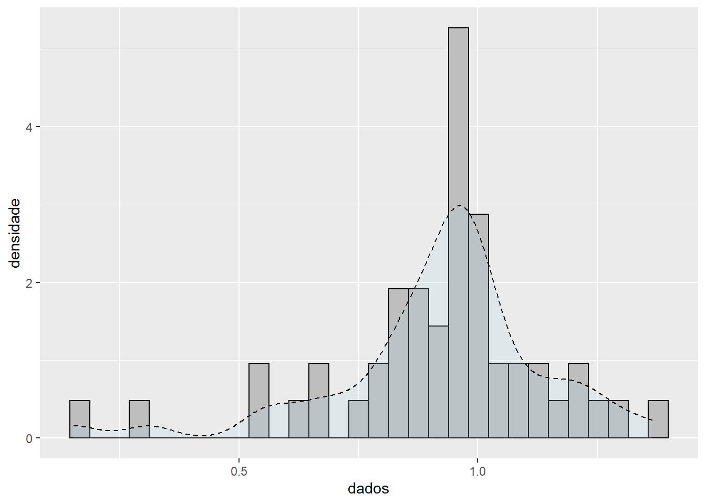

rm(list=ls(all=TRUE))
set.seed(22)
setwd("C:\\Users\\Wyara Silva\\Meu Drive\\disciplina-isolada-ufmg-2022\\inferencia-estatistica\\trabalho-1")
dados.f = read.table("Dados_Weibull.txt")
dados = unlist(dados.f, use.names = FALSE)
library(ggplot2)
ggplot(dados.f, aes(x=V1)) +
geom_histogram(aes(y=..density..), bins = 30, color="black", fill="grey")+
geom_density(alpha=.2, linetype = 2, fill="light blue") +
labs(x="dados", y = "densidade")
newton.raphson.w = function(x.dados, alpha.0=10, precisao = 1e-7, n=100){
#primeira e segunda derivada da log-verossimilhança com relação a alpha
dlogLikW = function(y){(length(x.dados)/y) + sum(log(x.dados)) - sum(log(x.dados)*(x.dados^y))}
ddlogLikW = function(z){-(length(x.dados)/z^2) - sum((log(x.dados)^2)*(x.dados^z))}
for (i in 1:n) {
#equação de recorrência de newton-raphson
alpha.1 = alpha.0 - dlogLikW(alpha.0)/ddlogLikW(alpha.0)
#verificar se convergiu
if(abs(alpha.1 - alpha.0) < precisao){
res = list(alpha.1,i)
names(res) = c("alpha.estimado","n.iter")
return(res)
}
#nova iteração
alpha.0 = alpha.1
}
print("com o número de iterações não houve convergência")
}
newton.raphson.w(dados)$alpha.estimado
[1] 4.965997
$n.iter
[1] 5#simulação
n = c(10,30,100,1000)
estimativas = array(NA, dim=c(1, length(n)))
for (i in 1:length(n)){
#a parametrização da distribuição weibull da função 'rweibull'
#é igual a utilizada neste trabalho.
dat = rweibull(n[i], shape=5, scale=1)
estimativas[,i] = newton.raphson.w(dat,2)$alpha.estimado
}
estimativas [,1] [,2] [,3] [,4]
[1,] 5.595741 4.692904 5.088293 5.0562